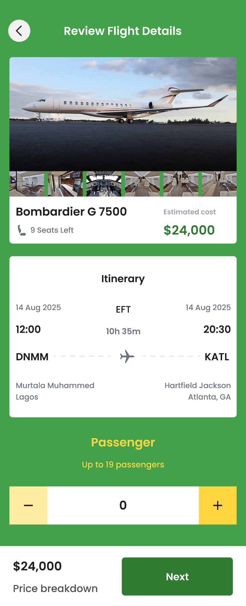
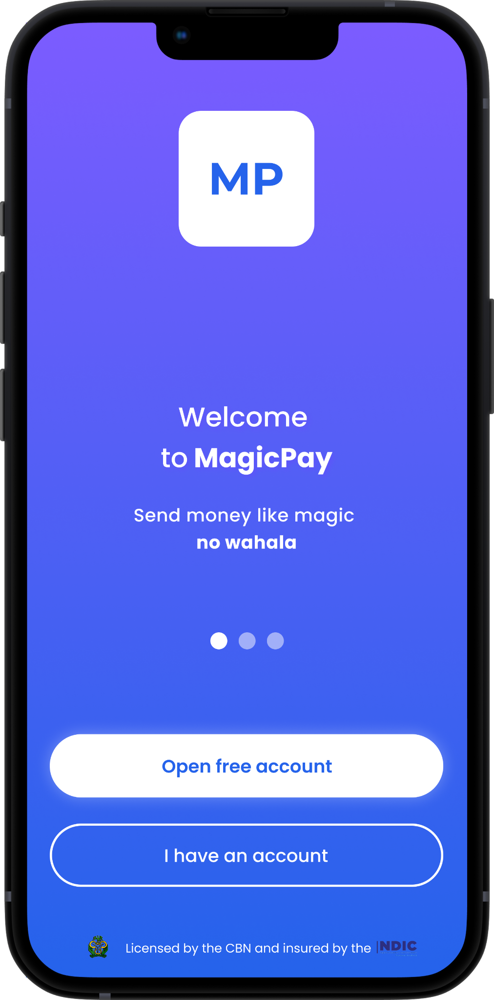

01 — PRODUCT DESIGN & DEVELOPMENT↗
01 — PRODUCT DESIGN & DEVELOPMENT↗
EVENT TECHNOLOGY · WEB PLATFORM
Ticketa
An event ticketing platform connecting event discovery, ticket purchasing, organizer operations and QR-based entry management.
View case study ↗I'm Makinde Isaiah — a designer and developer who turns ideas into clear, useful digital experiences. I work across the full journey, from shaping an interface in Figma to bringing it to life with code.
SCROLLThree projects that reflect how I think, design and build across different product spaces.
01 — PRODUCT DESIGN & DEVELOPMENT↗
An event ticketing platform connecting event discovery, ticket purchasing, organizer operations and QR-based entry management.
View case study ↗
02 — MOBILE PRODUCT DESIGN↗A private aviation booking experience covering charter search, aircraft selection, booking and trip management.
View case study ↗
03 — FINTECH PRODUCT DESIGN↗A mobile financial services concept for everyday money movement, cards and bill payments.
View case study ↗I don't just think about how a product looks.
I care about how it works.
Curiosity got me started. Building real projects keeps me learning.
I’m a self-driven UI/UX designer and web developer with a practical interest in how digital products are imagined, designed and built.
Since 2021, I’ve been developing my skills through independent learning, tutorials and hands-on projects. I enjoy moving between design and development: understanding a user need, mapping an experience, designing the interface and implementing the working product.
I'm currently looking for an internship where I can contribute to a team, learn from experienced people and grow across product design and web development.
Let's connect ↗A connected skill set that lets me approach a product from both the design and technical sides.
Figma, user flows, wireframes, interface design, prototyping and responsive design thinking.
Building responsive, accessible interfaces and translating visual designs into clean web experiences.
Creating server-side functionality, handling data and connecting application workflows.
Building and customizing content-driven websites and landing pages for real business needs.
Clarify the goal, audience and problem before jumping into screens or code.
Map the key journeys, content and functionality the experience needs.
Explore layouts and interactions, then refine the interface around the user journey.
Implement, test the flow and improve based on what works and what needs attention.
I'm open to UI/UX design and web development internships, collaborations and conversations about building useful digital products.
Get in touch ↗